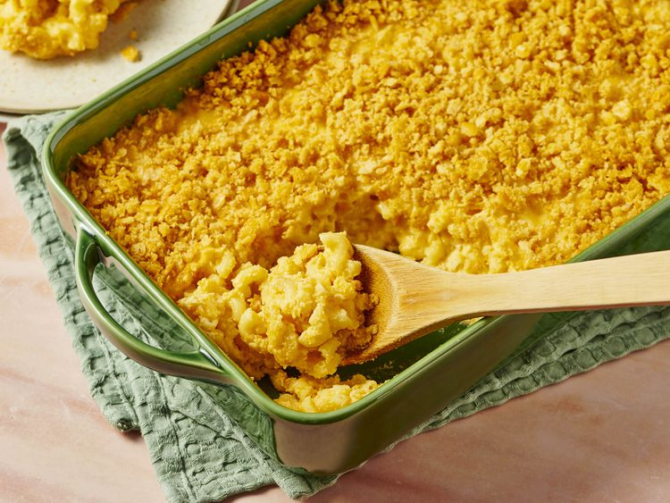

Home
Baked Macaroni and Cheese

Description
A classic baked macaroni and cheese recipe that is sure to please!
It's probably based on recipes that have appeared in cookbooks
since at least the 1920s, but this particular version can be
found
here on allrecipes.
Ingredients
- 2 1⁄2 cups elbow macaroni
- 1⁄4 cup butter
- 1⁄4 cup all-purpose flour
- 1⁄2 teaspoon salt
- 4 cups milk
- 1 pound shredder Cheddar cheese
- 1⁄4 cup butter, melted
- 1 sleeve buttery round crackers, crushed
Steps
- Gather all ingredients. Preheat the oven to 350 degrees F
(175 degrees C).
- Bring a large pot of lightly salted water to a boil. Cook elbow
macaroni in the boiling water, stirring occasionally, until
tender yet firm to the bite, about 8 minutes; drain well.
- Melt 1⁄4 cup butter in a large saucepan over medium heat.
Stir in flour and salt; cook, stirring constantly, for 2 minutes.
Whisk in milk and simmer, stirring frequently, until mixture
thickens slightly, about 5 minutes.
- Turn off the heat and stir in Cheddar cheese, in batches, until
cheese is melted. Add macaroni and stir to coat.
- Pour into a 9x13-inch baking dish. Mix the remaining 1⁄4
cup of melted butter and crushed crackers together in a bowl;
scatter evenly over macaroni mixture.
- Bake in the preheated oven until golden brown on top, about
45 minutes.